ggplot2 as a Creativity Engine
... and other ways R is transforming the FT's quantitative journalism

Contents
• In a land before ggplot2
• Auditioning graphics
• ggplot2 for rapid prototyping
• ggplot2 in the print graphics workflow
In a land before ggplot2
• We produce a *lot* of charts at the FT
• Approximately 50 data visualisations per day
• Mostly lines and bars
• I have nothing against lines and bars, but...
Man shall not live on lines and bars alone
1. Ubiquity: if your chart becomes 'just another bar chart popping up on Twitter', it's useless as an attention-grabbing device
2. Discourages creativity: if your charts are perceived by your own journalists simply as 'jobs' to be done, they will be misused. The worst case scenario is that they become seen simply as 'things to break up text', interchangeable with quotes, photographs
A picture paints a thousand words so let's take advantage of that
"[Data visualisation] is not meant just to be seen but to be read, like written text.” - Alberto Cairo
Bars and lines are NIBs, 'more to follow' stories. These have their place, but you need to add some GaaS (Graphic as a Story)
...Isn't this talk meant to be about ggplot2?
The need for speed
We need to produce high quality, striking data visualisations
Until recently, such narrative graphics would be the job of an information designer, most likely trained in tools like Adobe Illustrator. The output would be beautiful, but the journey could be long and winding
To reach the same end point more quickly, we need to be able to audition different visual treatments as quickly as possible
Enter, stage right...
ggplot2
Makes it easy to quickly experiment with:
• Different ways of encoding data in shape, space and colour
• Small multiples vs multiple series
• Display ratios
• Layering visual elements
An example:
A case study
Like all good projects, inspired by a tweet

Changing tides of European footballing power
The top-end quality, strength-in-depth and competitive balance of European football leagues have changed markedly over the last 15 years. We need to show:
1. Which countries have the best teams?
2. Which leagues are the most/least balanced?
3. What is the 'quality gap' between a given pair of leagues?
4. How does the nth best team in league x today compare to its predecessors?
5. How have all of the above changed over time?
Visual requirements:
1. Which countries have the best teams? linear comparison
2. Which leagues are the most/least balanced? distribution of parts within the whole
3. What is the 'quality gap' between a given pair of leagues? difference in area between two curves
4. How does the nth best team in league x today compare to its predecessors? value in context
5. How have all of the above changed over time? evolution of an already detailed pattern over time
Visual solutions:
1. Which countries have the best teams? linear comparison >> points
2. Which leagues are the most/least balanced? distribution of parts within the whole >> points on a line
3. What is the 'quality gap' between a given pair of leagues? difference in area between two curves >> ribbon*
4. How does the nth best team in league x today compare to its predecessors? value in context >> shaded range
5. How have all of the above changed over time? evolution of an already detailed pattern over time >> faceted plots
1. Which countries have the best teams?
#1
ggplot(oneSeason,
aes(x=1,score,col=country)) +
geom_point(size=3) +
theme_bw() +
theme(legend.position="right", legend.direction="vertical") +
xlab('')
1. Which countries have the best teams?
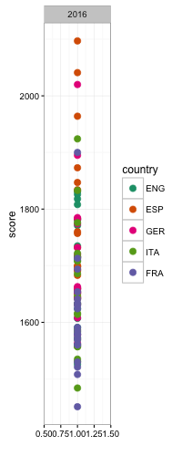1.1. Which countries have the best teams?
(with room to breathe)
#2
ggplot(oneSeason
,aes(rank,score,col=country)) +
geom_point(size=3) +
theme_bw() +
theme(legend.position="top")
1.1. Which countries have the best teams?
(with room to breathe)
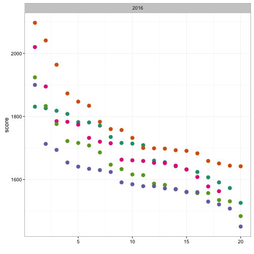2. Which leagues are the most/least balanced?
#3
ggplot(oneSeason
,aes(rank,score,col=country)) +
geom_path() +
geom_point(size=3) +
theme_bw() +
theme(legend.position="top")
2. Which leagues are the most/least balanced?
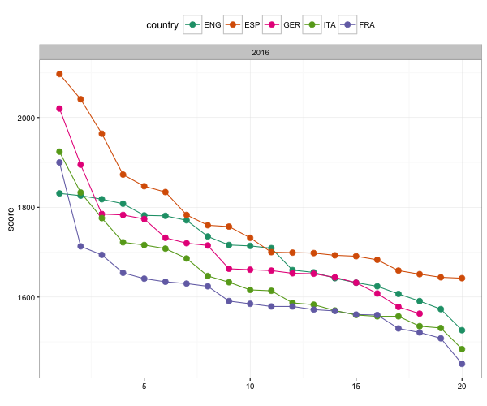3. What is the 'quality gap' between a given pair of leagues?
#4 step 1: preparing the data
engEsp <- oneSeason %>%
filter(country %in% c('ENG','ESP')) %>%
dplyr::select(score, rank, country) %>%
spread(., country, score) %>%
rowwise() %>%
mutate(
gap = ESP-ENG,
max = max(ESP,ENG),
min = min(ESP,ENG)
)
3. What is the 'quality gap' between a given pair of leagues?
#4 step 2: the plot
ggplot(engEsp,
aes(rank,score,fill=gap>0)) +
geom_rect(aes(xmin = rank-0.5, xmax=rank+0.5, ymin=min, ymax=max), alpha=0.5) +
theme_bw() +
theme(legend.position="none")
3. What is the 'quality gap' between a given pair of leagues?
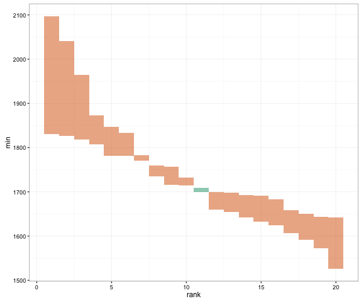4. How does the nth best team in league x today compare to its predecessors?
#5
ggplot(oneSeason %>%
filter(country == 'ENG'),
aes(rank,score,col=country)) +
geom_ribbon(aes(ymin=atw, ymax=atb,
fill=country), col='transparent', alpha=0.5) +
geom_path(alpha=1, size=1.5) +
geom_point(size=3) +
theme_bw() +
theme(legend.position="none")
4. How does the nth best team in league x today compare to its predecessors?
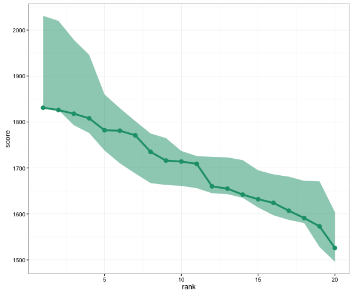4.1. How does the nth best team in league x today compare to its predecessors?
#6
ggplot(oneSeason %>%
filter(country == 'ENG'),
aes(rank,score,col=country, fill=country)) +
geom_rect(aes(xmin=rank-0.5, xmax=rank+0.5, ymin = atw, ymax = atb), col='transparent', alpha=0.5) +
geom_point(size=5) +
theme_bw() +
theme(legend.position="none")
4.1. How does the nth best team in league x today compare to its predecessors?

4.2. How does the nth best team in league x today compare to its predecessors?
#7
ggplot(oneSeason %>%
filter(country == 'ENG'),
aes(rank,score,col=country, fill=country)) +
geom_rect(aes(xmin=rank-0.45, xmax=rank+0.45, ymin=atw, ymax=atb),col='transparent', alpha=0.5) +
geom_point(size=5) +
theme_bw() +
theme(legend.position="none")
4.2. How does the nth best team in league x today compare to its predecessors?
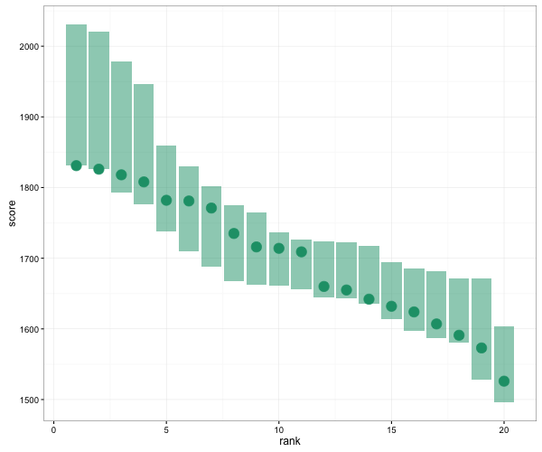5. How have all of the above changed over time?
First, the top teams and balance within each league
#8
ggplot(allSeasons,
aes(rank,score,col=country)) +
geom_path() +
geom_point(size=1) +
facet_wrap(~year, ncol=4) +
theme_bw() +
theme(legend.position="top")
5. How have all of the above changed over time?
First, the top teams and balance within each league
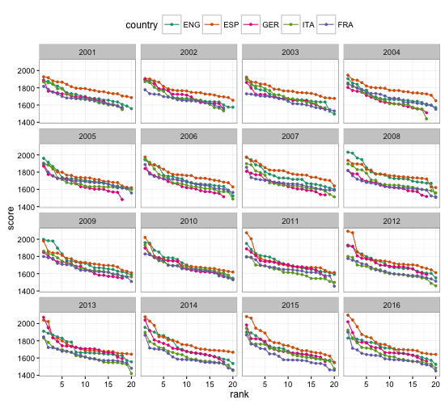5.1. How have all of the above changed over time?
Quality gap between a pair of leagues
#9 step 1: preparing the data
engEspAllYears <- allSeasons %>%
filter(country %in% c('ENG','ESP')) %>%
dplyr::select(score,year,rank,country) %>%
spread(., country, score) %>%
rowwise() %>%
mutate(
gap = ESP-ENG,
max = max(ESP,ENG),
min = min(ESP,ENG)
)
5.1. How have all of the above changed over time?
Quality gap between a pair of leagues
#9 step 2: the plot
ggplot(engEspAllYears,
aes(rank,score,fill=gap>0)) +
geom_rect(aes(xmin = rank-0.5, xmax=rank+0.5, ymin=min, ymax=max), alpha=0.5) +
facet_wrap(~year, ncol=4) +
theme_bw() +
theme(legend.position="none")
5.1. How have all of the above changed over time?
Quality gap between a pair of leagues
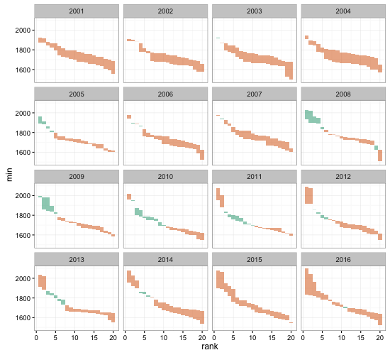5.2. How have all of the above changed over time?
Individual teams in national, historical context
#10
ggplot(allSeasons %>% filter(country=='ENG'),
aes(rank,score,col=country,fill=country))+
geom_rect(aes(xmin=rank-0.45, xmax=rank+0.45, ymin=atw, ymax=atb), col='transparent', alpha=0.5) +
geom_path(alpha=1) +
geom_point(size=1) +
facet_wrap(~year, ncol=4) +
theme_bw() +
theme(legend.position="none")
5.2. How have all of the above changed over time?
Individual teams in national, historical context
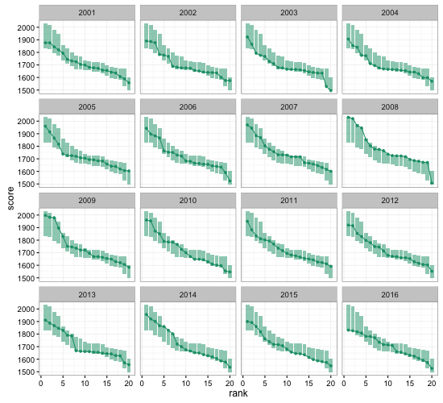Resources
Dataset and all plot-generating R scripts are here
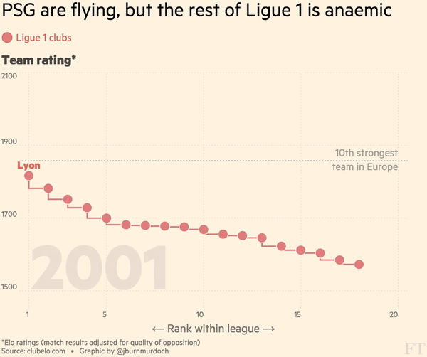
Putting it all together, FT-style


128 charts in total 😎
Summary
ggplot2 is awesome because:
• It takes minimal time and effort to audition multiple different ideas for a graphic, and to iterate on them
• It gets people thinking in the continuous visual encoding space, rather than the discrete chart-type space
• ggplot2 %>%
printNewspaper (!!!)
ggplot2 in print
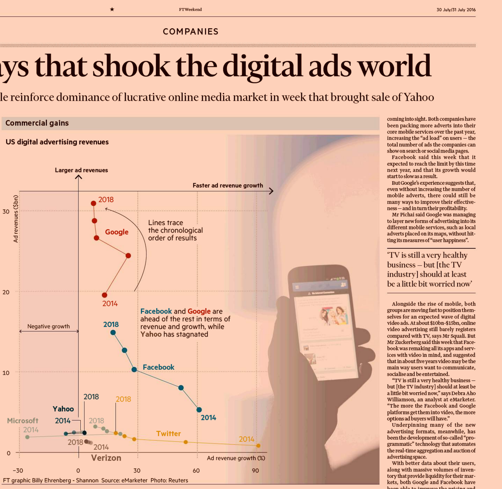Any questions?
Tweet @jburnmurdoch or email john.burn-murdoch@ft.com
These slides are at bit.ly/ggplot-dataviz
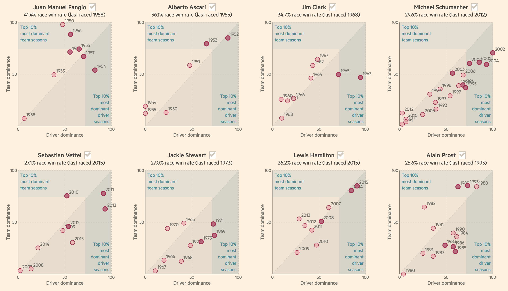